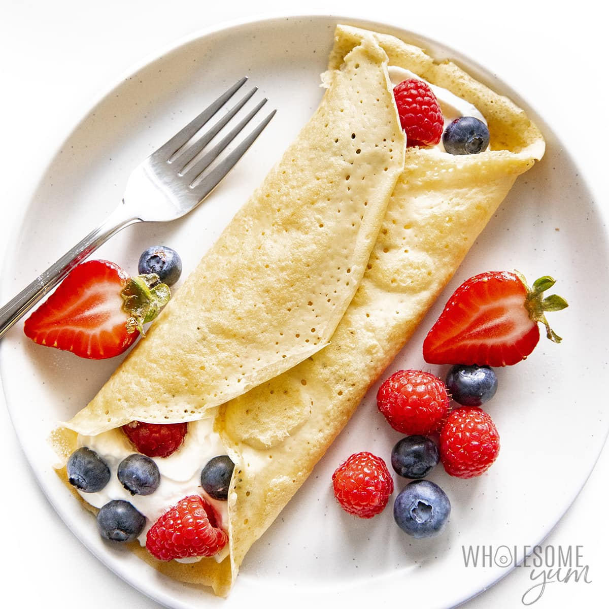

Crepe Recipe

Description
Breakfast crepes are an easy, yet elegant meal. They are a good addition to your morning
cup of coffee or tea, they taste good with juice, and are just as great on their own!
Ingredients
- 2 large eggs
- 1 tablespoon unsalted butter
- 1 cup flour
- 2 tablespoon sugar
- 2 cups milk
Steps
- In a bowl, combine flour and sugar.
- Whisk in the eggs and milk until smooth, stirring constantly.
- Whisk in the melted butter.
- Heat a non-stick skillet over medium heat, brush it with a little butter.
- For each crepe, pour 3 tbsp of batter in the center of the skillet.
Cook for about 30 second on each side.
- Plae the cooked crepes on a plate as you go
- Enjoy!